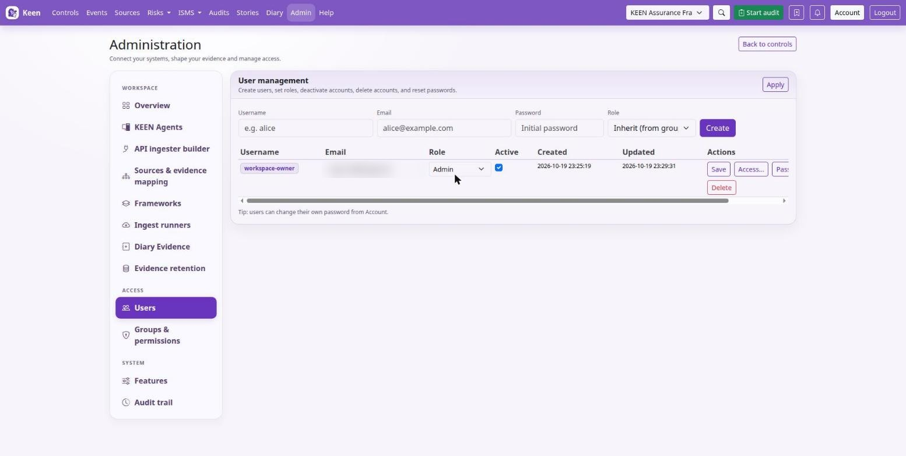
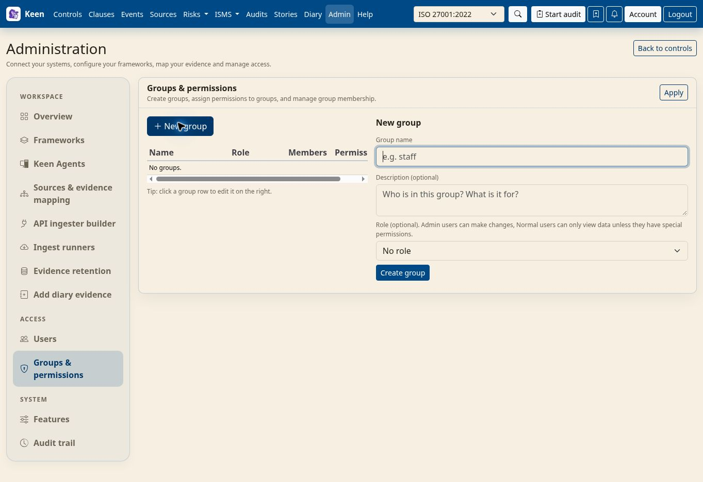

Administering Keen
Local accounts, MFA and security email
Chapter 2 of 37
Local two-factor authentication
Local accounts can use authenticator apps, security keys or passkeys, and single-use recovery codes. This chapter sets the policy, generates the one key that must never be lost, and explains how an operator recovers a locked-out account. SSO and trusted-proxy accounts get their second factor from the upstream provider.




- Generate the encryption key with the API image's cryptography library:
docker compose run --rm --no-deps keen-api python -c 'from cryptography.fernet import Fernet; print(Fernet.generate_key().decode())' - Store it as
KEEN_MFA_ENCRYPTION_KEYin the deployment's secret configuration, outside the database, with a secure backup. Use the same key on every API replica. - Choose the policy and recreate the API containers:
KEEN_MFA_POLICY=optional KEEN_MFA_ENCRYPTION_KEY=<generated Fernet key>
| Policy | Who must enrol |
|---|---|
optional | Nobody; users choose. |
admins | Accounts with the effective administrator role. |
all | Every local account. |
The key protects TOTP secrets. Losing or replacing it without migrating existing secrets prevents their verification; restore the original key or perform a controlled account recovery. Security keys store public keys and recovery codes are stored as SHA-256 hashes, so both keep working without it.
MFA ceremonies use KEEN_PUBLIC_BASE_URL as their origin and its hostname as the WebAuthn relying party, so that origin must be HTTPS (HTTP localhost is accepted for development) and the reverse proxy must preserve the browser's Origin header. Changing the hostname later means planning WebAuthn re-enrolment.
Going deeper: how the policy is enforced
Accounts subject to the policy complete enrolment after password verification and before receiving an application session, and existing local sessions without the required factor are denied at their next authentication check. Changes to passwords, factors or recovery-code sets invalidate local sessions at subsequent checks; already-open WebSocket connections are not actively disconnected. Keep at least one recovery route before enforcing a policy.
Five incorrect authenticator or recovery codes within an hour, counted across sign-ins, end a verification: the account then accepts no code for an hour, a security key still completes sign-in, and the account's owner receives an e-mail. Every session, whatever its sign-in method, ends KEEN_SESSION_MAX_AGE_SECONDS after sign-in (30 days by default) however recently it was used; KEEN_SESSION_TTL_SECONDS sets how long an unused session lasts.
The Account Security page requires the local password and, once enrolled, an existing second factor before any change. Recovery codes are shown once, generating replacements invalidates the previous set, and a required account cannot remove its last authenticator.
Operator recovery
Verify the account owner's identity through your organisation's recovery process first. Then an operator with access to the API container and database can reset local factors:
docker compose exec keen-api python scripts/mfa_admin.py alice --reset --confirm-username aliceThis removes authenticators, recovery codes and pending challenges, revokes local sessions and records an operator-reset audit entry. It keeps the password, and a required account enrols again at its next login. A password reset on its own leaves MFA enrolment in place. Restrict shell and database access accordingly.
Permissions: what each one allows
An account is an administrator or it is not, and beyond that it holds permissions, granted to it directly or through its groups in Admin → Users and Admin → Groups & permissions. An account holds every permission granted either way. This section lists every permission Keen checks and exactly what it opens.
Three rules hold for every row of the table:
- The administrator role is not a permission. Administrators pass every check below. No permission, and no combination of them, opens what belongs to administrators: accounts, groups and permissions; sources, connections, schedules and mapping rules; frameworks and the owners of controls and clauses; evidence retention; the audit trail and every register's change history; Keen Agents; and adding or editing diary entries.
- Every signed-in account, with no permission at all, manages its own password, second factors, preferences and inbox; lists frameworks, controls and clauses, without evidence counts; opens the Statement of Applicability, where each section follows its own read permission; sits the quizzes assigned to it; reads the audits it is named in as an attendee; and reads the risks owned by an organisation role it belongs to.
- A permission that reads a record does not change it, with the one exception the table names (
stories.readcomments). A manage permission includes its own read permission.
| Permission | What it reads | What it changes |
|---|---|---|
events.read | Events and evidence lists, their artifacts and exports; statistics, volume charts and source graphs; evidence counts on controls; the list of collected sources. With ISMS read access, the cloud and workstation posture shown on Vendors and People. | Nothing by itself. It is the half of every event action: raising or removing an incident and asking or deleting a question on an event each need it together with the permission for that action. |
isms.read | Every ISMS register: policies and documents, objectives, SWOT, assets and licences, the access control matrix, the organisation chart, People, Vendors / 3rd parties, effectiveness measures and their results, and meetings. Diary entries about ISMS records. | Nothing. |
isms.manage | Everything isms.read reads. | Adds, edits, deletes and imports the records in every ISMS register, records measure results and issues a measure's submission secret. Three changes need a second permission, because they move access that follows a record: a role that owns risks needs risk.manage, a role or person a quiz is assigned to needs quiz.manage, and the account of a person named as an audit attendee needs audits.admin. |
risk.read | Risks, the risk register, the risk library and its categories, and the questions asked on risks. It also reads the ISMS registers and PESTLE(E), as isms.read and pestle.read do. Diary entries about risks and about ISMS records. | Nothing by itself; with question.create, asks a question on a risk. |
risk.manage | Everything risk.read reads. | Adds, edits, deletes and imports risks, their assets, categories and library entries, and changes the register's settings. It also manages the ISMS registers and PESTLE(E), as isms.manage and pestle.manage do: grant it only to people who should change all three. With events.read, raises a risk from a posture finding. |
pestle.read | PESTLE(E) factors and their business processes. | Nothing. |
pestle.manage | Everything pestle.read reads. | Adds, edits and deletes PESTLE(E) factors and business processes. |
audits.read | Every audit and scheduled audit template, with its scope, samples, findings, attendees and report. An audit's readers see its samples, a sampled event's summary included, without read access to the sampled record itself. | Nothing. |
audits.manage | Everything audits.read reads. Includes events.read and isms.read, because whoever samples evidence into an audit reads what audits examine. | Creates audits and scheduled templates, and edits the ones its holder created: scope, controls, samples, attendees, findings and the report. Sampling a risk, a PESTLE(E) factor or a story still needs read access to it. |
audits.admin | As audits.manage, including events.read and isms.read. | Edits and deletes any audit or scheduled template, whoever created it. |
incident.create | Nothing. | With events.read, marks an event as an incident. |
incident.delete | Nothing. | With events.read, removes an incident record from an event. |
question.create | Nothing. | Asks a question on an event (with events.read) or on a risk (with risk.read). A question's author and administrators reply to it. |
question.delete | Nothing. | With events.read, deletes a question thread whose event or record its holder can open. |
stories.read | Every story: its title, summary, notes and layout. An item appears only to readers who can open the event or record it refers to; others see a placeholder. | Comments on stories. This is the one read permission that also writes. |
stories.manage | Everything stories.read reads. | Creates stories, and edits or deletes the ones its holder created. Adding an item needs read access to the event or record it refers to. |
stories.admin | Everything stories.read reads. | Edits and deletes any story. |
quiz.read | Quizzes and their anonymised results. | Nothing. |
quiz.manage | Everything quiz.read reads, and each person's answers and scores. | Creates, schedules, assigns and grades quizzes. |
Four permissions reach further than their names suggest. risk.read and risk.manage extend to the ISMS registers and PESTLE(E), so a risk manager also manages those. audits.manage and audits.admin include events.read and isms.read. The reverse does not hold: isms.manage opens no risk, and events.read opens no audit.
Access also follows three relationships, whatever permissions an account holds: an audit's attendees read that audit, the members of an organisation role read the risks that role owns, and a quiz's audience sits it. Review a role's members before choosing it as a risk's owner or a quiz's audience.
An AI app connected over MCP is limited to the scopes its person approved, which carry the same names and never exceed that person's own permissions. rules.write is a scope only, offered to administrators; it is not a permission and cannot be granted to an account or group.
Starting groups
Keen arrives with three groups to start from. They are ordinary groups: rename them, change what they hold or delete them, and add your own. None sets a role, so a member's own role decides whether they are an administrator; people who run Keen itself, such as a CISO or a platform engineer, are administrators rather than members of a group. An upgrade adds a starting group only where no group already has its name.
| Group | Permissions | What its members do |
|---|---|---|
| Internal auditors | events.read, isms.manage, risk.manage, pestle.manage, audits.admin, incident.create, incident.delete, question.create, question.delete, stories.admin, quiz.manage | Runs the management system: every permission's reach, and nothing that needs the administrator role. |
| External auditors | audits.manage, events.read, isms.read, risk.read, pestle.read, quiz.read | Creates and runs their own audits and reads everything else. Stories are left out, because reading them includes commenting. |
| Staff | events.read, isms.read | Reads evidence and the ISMS registers and changes nothing. Sitting an assigned quiz needs no permission. |
Security notification delivery
With mail configured, Keen e-mails users about sign-ins from unfamiliar addresses and about changes to their credentials. This section configures the mail path and the proxy settings that make the IP checks truthful.
Security alerts use the ordinary SMTP settings, applied to both the API and the worker, with the Celery worker and beat running:
KEEN_SMTP_HOST=smtp.example.org
KEEN_SMTP_PORT=587
KEEN_SMTP_USERNAME=keen
KEEN_SMTP_PASSWORD=<SMTP credential>
KEEN_SMTP_USE_TLS=true
KEEN_SMTP_USE_SSL=false
KEEN_SMTP_FROM_EMAIL=keen@example.org
KEEN_SMTP_FROM_NAME=Keen
KEEN_PUBLIC_BASE_URL=https://keen.example.orgFor implicit TLS on port 465, set KEEN_SMTP_USE_SSL=true and KEEN_SMTP_USE_TLS=false. Keen sends the SMTP username and password only over STARTTLS or implicit TLS. Each recipient needs an e-mail address on their Keen account; without SMTP or an address, no alert is queued.
Going deeper: which events produce an e-mail
Alerts cover unfamiliar-IP successful local and native SSO logins, local password changes and administrator resets, factor enrolment and removal, recovery-code regeneration, each use of a recovery code, a verification ended after five incorrect codes within an hour, and operator MFA resets. A password-only pending MFA challenge is not a successful login. Other failed attempts and password or MFA changes made inside an external identity provider produce no alert, and trusted-header authentication has no Keen login ceremony, so arrange sign-in alerts at that provider. Successful-login IP history is kept even when mail is unconfigured.
Identify the client IP through proxies
KEEN_SECURITY_TRUSTED_PROXY_CIDRS lists the real reverse-proxy addresses or CIDRs, including the UI nginx hop when applicable. The supplied Compose file pins its network and, while the setting is empty, trusts the keen-ui container and the network gateway, where connections to the host's published port arrive, such as from a TLS proxy on the same host. Without Compose, an empty value makes Keen use the socket address, which behind a proxy is the proxy itself, so every client shares one sign-in allowance. Configure the real proxy chain before relying on unfamiliar-IP alerts, trust only the hops you operate, and restrict direct access to the API.
Going deeper: how the forwarded address is chosen
Keen walks X-Forwarded-For from right to left while the current hop is trusted, stopping at the first untrusted address. Proxies must append the actual connecting peer or overwrite the header at the public edge; avoid broad trust ranges that include untrusted clients. If Uvicorn rewrites client addresses, either use --no-proxy-headers and let Keen perform this check, or make Uvicorn's trusted-proxy configuration equally restrictive.
IP history begins when the feature is deployed, so each account's first observed address triggers one alert once mail is configured. Addresses are normalised, including IPv4-mapped IPv6; concurrent logins from the same account and address enqueue one alert; known addresses remain until the account is deleted; VPN and network changes can legitimately trigger alerts.
Delivery and troubleshooting
A change and its notification intent commit together in PostgreSQL. Every minute the worker processes up to ten queued messages and retries SMTP failures up to eight times with increasing delays capped at one hour, so delivery never runs inside a login or account-change request. SMTP acceptance means the relay took the message; mailbox delivery is the mail service's job.
Going deeper: inspecting the outbox
The worker logs notification IDs, attempt counts and status, without SMTP exception text or message contents. Operators can inspect the security_notifications table for status, attempts, next_attempt_at and last_error, and requeue failed rows after fixing SMTP. A sent row keeps no message text, and sent and failed rows are removed after thirty days while SMTP is configured. A crash after SMTP acceptance and before recording success can produce a duplicate notification. Passwords, TOTP secrets and recovery-code values never appear in these messages. The outbox also carries SSO address verification links, each of which expires thirty minutes after it is requested.
AI agent access (MCP)
Keen can serve its records to AI apps over the Model Context Protocol (MCP). The MCP endpoint, its OAuth endpoints and the consent page stay off until you set KEEN_MCP_ENABLED=true; while MCP is off they answer 404 and tokens issued earlier stop working. Connections that have not expired resume when MCP is turned on again.
- Serve Keen over HTTPS and set
KEEN_PUBLIC_BASE_URLto that origin. Keen refuses to start with MCP enabled on a plain-HTTP origin other than localhost. - Set
KEEN_MCP_ENABLED=trueand recreate the API container. - For a hosted assistant, list its OAuth callback in
KEEN_MCP_REDIRECT_URIS; for claude.ai, listhttps://claude.ai/api/mcp/auth_callbackandhttps://claude.com/api/mcp/auth_callback. The setting is empty by default, which admits only local apps such as Claude Code and Claude Desktop; their loopback callbacks are always accepted. - To let connections add and update records, for example while onboarding an organisation, also set
KEEN_MCP_WRITE_ENABLED=true. Connections are read-only without it.
People connect from Account → Security, where Keen shows the server address, https://keen.example.com/api/v1/mcp for an installation at https://keen.example.com. A hosted assistant such as claude.ai connects from its provider's network, so Keen must be reachable from the internet for it; a local app connects from the person's computer.
Going deeper: how access is granted and limited
Keen is the OAuth authorisation server for its MCP endpoint. Apps register themselves (RFC 7591) as public clients, prove possession with PKCE and are sent to Keen's consent page, which requires a signed-in session and any second factor your policy requires. Access tokens last one hour. Refresh tokens rotate on every use and lapse after 30 days unused, and a grant ends 90 days after consent. Presenting a used authorisation code or refresh token revokes its grant. Keen stores only digests of codes and tokens.
Read scopes are offered when the account holds that permission or its domain's manage permission. Each request narrows the account's current permissions to the grant's scopes, with no administrator role, and reaches only the routes the tools use. Each tool works through those Keen API routes, so feature switches, permissions and object rules apply as they do in the browser, and the audit trail records each request under the account with the user agent Keen MCP (client id). Each connection may make 600 reads and 120 changes a minute. Deactivating an account, or changing or resetting its password or second factors, ends its grants permanently. Keen e-mails the account when a connection is approved.
With KEEN_MCP_WRITE_ENABLED=true, consent also lists change scopes, unticked until the person ticks them: isms.manage (policies and processes, objectives, SWOT, assets, the access matrix, the organisation chart, measures, meetings, people and vendors / 3rd parties), risk.manage and pestle.manage (PESTLE(E) factors and business processes), each offered only to an account holding that same permission, and rules.write (new evidence mapping rules), offered only to administrators. A connection adds and updates records and imports risks and SWOT items, previewing an import before saving all of it or none. It never deletes, never replaces an existing mapping rule, and never changes accounts, permissions, settings, frameworks or controls. Only the mapping-rule routes act as an administrator, and only while the account is one. Removing the setting stops every change at once and leaves connections reading.
Registration, authorisation and token requests each have a per-address allowance; clients that share an address, such as a hosted assistant's users, share it. At most 1,000 registrations wait for approval at once, and an unapproved one is removed after a day.